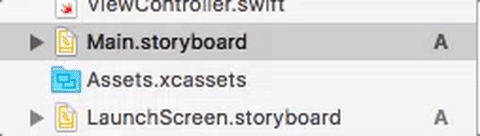
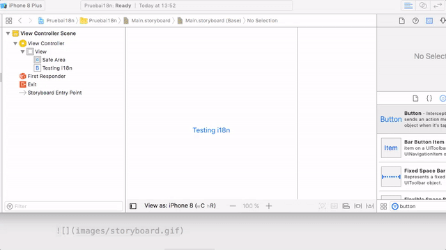
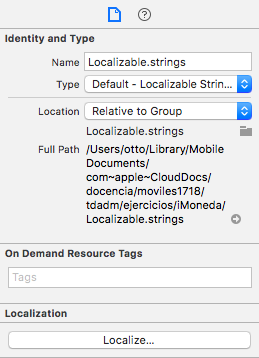
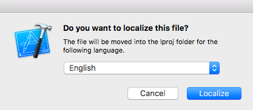

Internacionalización de aplicaciones iOS¶
En un mercado global hay que tener previsto desde el principio la adaptación de los mensajes y textos mostrados por la app al idioma local, y también de otras convenciones (unidades de medida, formatos de números y fechas,...). Al proceso de preparación de la app para soportar distintos idiomas se le denomina internacionalización (o i18n, por el número de letras existentes entre la "i" inicial y la "n" final de la palabra completa). A la adaptación para un idioma concreto se la denomina localización.
Vamos a ver aquí una introducción a las funcionalidades básicas que nos da la plataforma iOS para internacionalizar y localizar nuestras aplicaciones.
Añadir soporte para i18n¶
En la versión actual de Xcode los proyectos ya incluyen por defecto soporte para i18n. Si en un proyecto Xcode seleccionamos el icono del proyecto en el project navigator, al final de las propiedades podemos comprobar que aparece marcada una casilla denominada Use base internationalization. Si el proyecto ha sido desarrollado con una versión antigua de Xcode, la marcaremos.
El idioma de desarrollo o development language es el que se va a usar por defecto para desarrollar la interfaz. Además de este podemos añadir otros idiomas. En la versión actual de Xcode solo está previsto el inglés como development language y no se puede cambiar desde el IDE. Podríamos cambiarlo editando manualmente el archivo .pbxproj del proyecto, aunque aquí vamos a usar el inglés como idioma base.
Localizar la interfaz gráfica¶
Al diseñar la interfaz hay que recordar que debemos usar el development language en los textos de los componentes. Por tanto por defecto pondremos los textos de los botones, Label, etc en inglés.
Para que sea más fácil probar las funcionalidades se recomienda terminar primero la interfaz y luego seguir el proceso descrito. Más tarde veremos qué sucede si se añaden nuevos elementos a la interfaz.
Añadir idiomas¶
Supongamos que ya hemos terminado de desarrollar la interfaz en inglés, que es el idioma base por defecto y queremos traducirla. Podemos añadir idiomas a la app en la sección Localizations. Para añadir un idioma basta pulsar +

Fíjate en que cuando añadimos un idioma aparece un cuadro de diálogo que nos dice qué archivos de la interfaz se van a internacionalizar, lo habitual será seleccionarlos todos pero podemos escoger los que nos interesen. Además podemos elegir el método usado. Por defecto es Localizable strings, pero hay otro método llamado Interface builder storyboard:
Localizable strings: por cada idioma hay un archivo de textoStringsen el que se almacena la traducción de los textos de cada botón, label, etc. El storyboard es único para todos los idiomas, y lo que se hace es cambiar solamente el texto.Interface builder storyboard: tenemos una copia del storyboard por cada idioma, y la editamos por separado.
Aquí vamos a describir cómo usar los Localizable strings, ya que es el método más común.
Los archivos .strings¶
Si hemos añadido idiomas adicionales veremos que en el project navigator los iconos de storyboard aparecen con una flecha a la izquierda indicando que en realidad son varios archivos. Al desplegarlo veremos que es el storyboard en sí más un archivo .strings por cada idioma añadido.

Al abrir este archivo .strings veremos que es un archivo de texto en el que por cada componente de usuario que contenga texto hay una línea en el formato
"identificador-del-componente" = "Texto mostrado"
Lo único que tenemos que hacer es cambiar el texto al idioma correspondiente. El identificador del componente es un tanto críptico ya que es autogenerado por Xcode,y se corresponde con el Object Id que podemos ver en el Identity inspector, aunque casi siempre es fácil saber de qué componente se trata simplemente por el texto mostrado.
Probar la interfaz¶
Podemos previsualizar cómo quedará la interfaz en los distintos idiomas sin necesidad de ejecutar la app. En el assistant editor, clicamos en la barra superior del editor, seleccionamos Preview, y el storyboard que queremos ver. Se mostrará el storyboard en el idioma base. Este idioma aparecerá en la esquina inferior derecha, pulsando sobre él podemos cambiarlo.

También podemos probar la app en el simulador y cambiar aquí el idioma del sistema. Habrá que salir de la app, ir al icono de settings (o configuración en la versión en español) y en el apartado General cambiar el Language & Region. El proceso es un poco más tedioso que la simple previsualización porque hay que salir y volver a entrar en la app y además el simulador tarda unos segundos en aplicar el nuevo idioma.
Añadir elementos a la interfaz tras internacionalizar¶
Hay un problema con el proceso descrito en los apartados anteriores y es que cuando se añaden nuevos elementos a la interfaz de usuario, Xcode no actualiza automáticamente los archivos .Strings.
Una posible solución sería editar manualmente los .Strings pero es un proceso tedioso porque, como hemos visto, cada componente viene identificado con su Object id y tendríamos que consultarlo manualmente en Xcode y copiarlo al archivo de texto, repitiendo la operación para cada nuevo elemento de la interfaz.
Apple tiene algunas herramientas que permiten automatizar el proceso en cierta medida, pero son herramientas en línea de comandos y su uso no es precisamente trivial. Por ejemplo podríamos usar la herramienta ibtool. Supongamos que hemos añadido una etiqueta al Main.storyboard y queremos actualizar el Main.Strings de español. Tendríamos que abrir una terminal e ir hasta el directorio donde esté este archivo. La estructura de de directorios y archivos relativa a la internacionalización será como la siguiente:

Como vemos, los archivos de español están en un subdirectorio llamado es.lproj. En el ejemplo solo hay un Main.Strings porque la launchscreen está vacía y por eso no ha generado ningún archivo. Los archivos del idioma base están en base.lproj, y este es el que contiene los storyboards.
Con la opción --import-strings-file le decimos a ibtool cuál es la versión actual del .Strings de la que queremos partir, y con --generate-strings-file en qué archivo queremos generar el resultado. Finalmente ponemos el nombre del archivo con el storyboard. Por ejemplo, suponiendo que abrimos la terminal y nos movemos al directorio es.lproj, el comando sería algo como:
ibtool --generate-strings-file Main.Strings --import-strings-file Main.Strings ../Base.lproj/Main.storyboard
Ponemos el mismo valor para el --generate-strings-file que para el --import-strings-file para actualizar el archivo, no queremos generar uno nuevo.
Una vez hecho esto, ya podemos editar manualmente el .Strings para añadir las traducciones de los nuevos elementos de la interfaz.
Hay herramientas de terceros que automatizan bastante más el proceso, algunas comerciales y otras open source como por ejemplo BartyCrouch. Esta sigue siendo una herramienta de línea de comandos pero con comandos mucho más sencillos, Por ejemplo podemos ejecutar simplemente
bartycrouch -p trayectoria/hasta/el/proyectopara actualizar automáticamente todos los archivosStrings.
Localizar los mensajes en el código¶
Hay mensajes que no están fijos en la interfaz, sino que se generan desde el código. Por ejemplo recordemos la app UAdivino que hicimos en el tema de "Introducción a las aplicaciones iOS".
Lo que tenemos que hacer para internacionalizar este tipo de mensajes es usar localized strings. Este tipo de strings no se toman de manera literal sino que se consideran claves en un archivo .Strings. El sistema sustituirá la clave por el valor asociado en el idioma actual.
La representación interna de los mensajes en el código sería parecida, aunque puede ser más breve, ya que no es el mensaje que va a ser el usuario final.
import Foundation
class Adivino {
func obtenerRespuesta() -> String {
let respuestas = ["si", "no", "ni_casualidad", "claro"]
let indice = Int(arc4random_uniform(UInt32(respuestas.count)))
return respuestas[indice]
}
}
En el momento en que queremos asignar el mensaje a un elemento de usuario podemos usar la macro NSLocalizedString, que obtiene el mensaje asociado a la clave
@IBAction func botonPulsado(_ sender: AnyObject) {
let respuesta = self.miAdivino.obtenerRespuesta()
self.labelRespuesta.text = NSLocalizedString(respuesta, comment: "")
}
El segundo parámetro de NSLocalizedString es un comentario que pueda ayudar a un traductor de la app a entender el contexto del mensaje. En este caso no tiene sentido y lo dejamos vacío.
Para que esto funcione nos falta todavía crear el archivo .strings. Por defecto se debe llamar Localizable.strings. Para crearlo, en Xcode se elige File > New > File. De entre las plantillas disponibles hay que ir a la sección Resource y elegir allí Strings File.
Teniendo seleccionado el archivo, en el File inspector del panel de la derecha de Xcode pulsamos el botón Localize... para que tenga versiones en distintos idiomas.

Nos preguntará qué versión inicial queremos crear (por defecto English).

Una vez creada esta podemos marcar el resto de idiomas que hemos añadido a nuestra app (en nuestro caso solo español)

Esto habrá creado dos archivos distintos para Localizable.strings, uno para inglés y otro para español. Ahora solo tenemos que editar las claves y los valores de cada uno de ellos.
Para la versión inglesa sería algo como:
"si" = "Yes!";
"no" = "No!";
"ni_casualidad" = "No way!";
"claro" = "Sure!";
Y para la española:
"si" = "¡Si!";
"no" = "¡No!";
"ni_casualidad" = "¡Ni de casualidad!";
"claro" = "¡Claro que sí!";
Para probar esta funcionalidad tendremos que ejecutar la app en el simulador y cambiar el idioma desde la aplicación de settings/configuración.
Es posible que en algunos casos tengamos mensajes con una parte fija y una variable. Por ejemplo un saludo en el que queremos incluir el nombre del usuario. Por desgracia, en la versión actual de iOS la interpolación de cadenas de Swift todavía no funciona para los mensajes internacionalizados. Tenemos que usar placeholders en el mensaje, que son caracteres que funcionan de modo similar a como lo hacen los caracteres de formato en el printf de C:
/* .strings en versión inglés */
saludo = "Welcome %@";
...
En este caso, para "montar" el mensaje final tenemos que usar un inicializador de String que acepte cadenas de formato:
let nombre = "John"
let mensaje = String(format: NSLocalizedString("saludo", comment: ""), nombre)
Nótese que estos placeholders (
%@) vienen "heredados" del lenguaje Objective-C, que utiliza unos caracteres de formato similares a los de C. Por ejemplo para mostrar un número entero se usa%d, aunque para mostrar una cadena se usa el carácter de formato genérico de "objeto", que como se ha visto es%@.